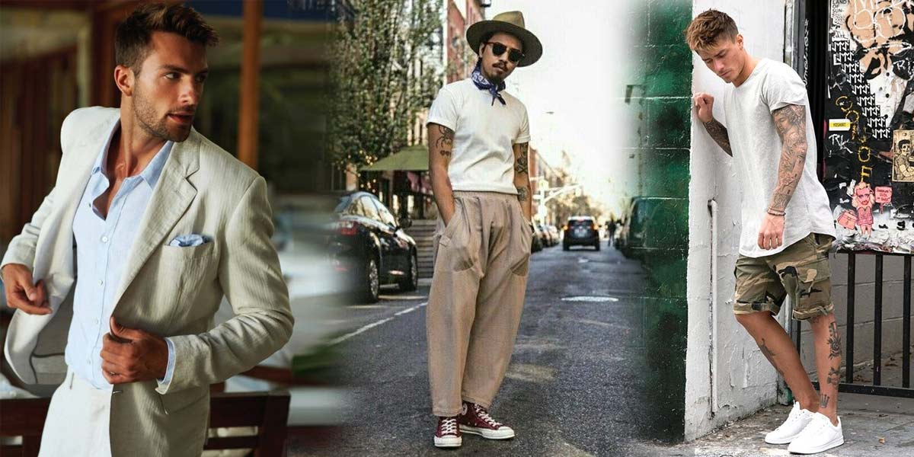
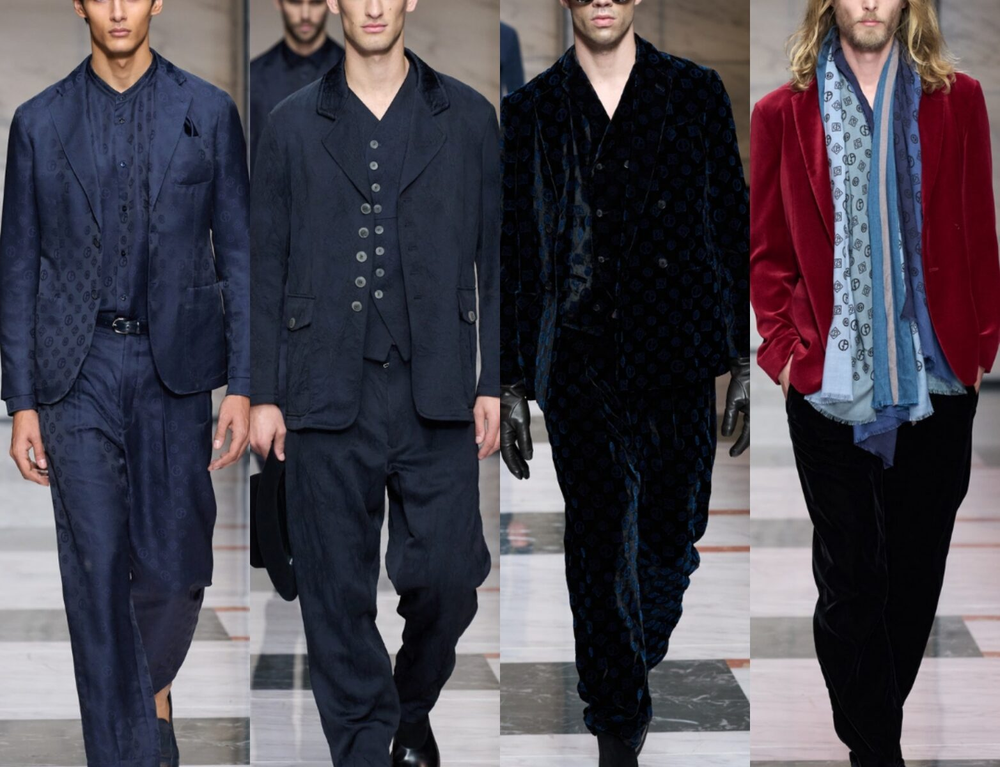

Nesta temporada de verão 2023/2024, as passarelas ganham vida com uma vibrante fusão de estilos e influências,
trazendo um frescor revigorante à moda. As cores pastéis suaves e os tons intensos de sorbet dominam as paletas, evocando uma sensação de leveza e alegria.
As estampas tropicais e florais se misturam a padrões geométricos em designs ousados e descontraídos. As texturas leves e fluídas reinventam o conforto,
com tecidos arejados e cortes soltos que permitem uma sensação de movimento e brisa. A sustentabilidade se torna central,
com muitas marcas adotando materiais orgânicos e práticas eco-friendly. Acessórios minimalistas, como chapéus de abas largas e óculos de sol retrô,
completam os looks, reafirmando a busca por uma elegância descomplicada. Este verão celebra a individualidade e a expressão pessoal, convidando todos a explorar um universo de estilos autênticos sob o sol escaldante.

À medida que o verão cede espaço ao outono, uma nova paleta de cores e texturas toma conta das passarelas e guarda-roupas. O outono de 2023 traz consigo uma sensação acolhedora e nostálgica, com tons terrosos e ricos tons de bordô, mostarda e verde musgo dominando as tendências. As estampas xadrez e tartan ressurgem, evocando um estilo elegante e atemporal. Os tecidos ganham peso e textura, com lãs, veludos e couros suaves trazendo conforto e sofisticação às peças. Silhuetas oversized e camadas estratégicas marcam a transição sazonal, permitindo a criação de looks versáteis e elegantes. Acessórios como lenços de seda e botas de cano alto complementam os visuais, adicionando um toque final de elegância outonal. À medida que as folhas caem e o ar se torna mais frio, as tendências de outono/inverno 2023/2024 exploram uma fusão intrigante entre o vintage e o futurista. Cores profundas, como azul meia-noite e vinho, são a base dessa estação, enquanto as estampas animal print assumem um papel de destaque, adicionando um toque audacioso aos visuais. A mistura de texturas se torna mais dramática, com peças de couro contrastando com tecidos fluidos e aveludados. As silhuetas variam desde formas estruturadas até cortes mais soltos e descontraídos. Acessórios metalizados e brilhantes conferem um ar futurista, enquanto cachecóis e luvas de tricô mantêm o aconchego característico do outono. O resultado é uma temporada que celebra a individualidade e convida a uma exploração criativa das possibilidades da moda, em meio à mudança das folhas e das temperaturas.
Cique aqui para ler as tendencias de inverno e primavera